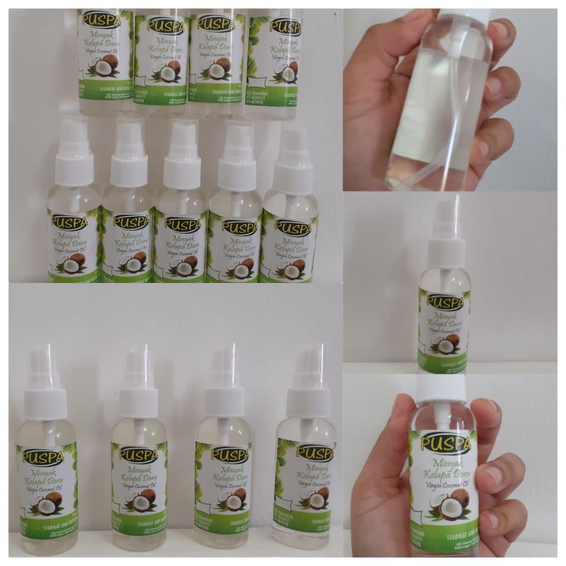
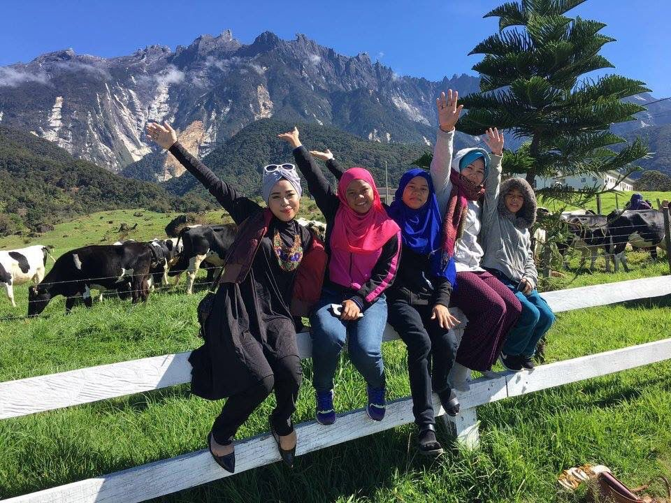

Puan Hamidah is a housewife and has 5 children,
3 of whom are girls and 2 of them are boys. She is very experienced
as a housewife who takes care of and educates her children,
however Puan Hamidah is also very experienced as an independent person
where she is the eldest child of 7 siblings.
He took care of his siblings at the same time as his children after his father's departure.
He bears full responsibility for providing for and caring for his siblings and children.
Besides that, Puan Hamidah is also a businessman who has been in business since she was 18 years old.
Puan Hamidah has been running her business since she was 18 years old until now.
Her businees are the manufacture of village coconut -flavored food.
as a person who has ventured into business, she must have a lot of experience in going through it.
First of all, as an experience he has been as an entrepreneur where he must always be strong
and patient to succeed in his job for his family and the future.
In venturing into business, he is experienced in following entrepreneurship programs to hone his talent.
In addition, Puan Hamidah has also received an award as an entrepreneur from Amanah Ikhtiar Malaysia (AIM).
 